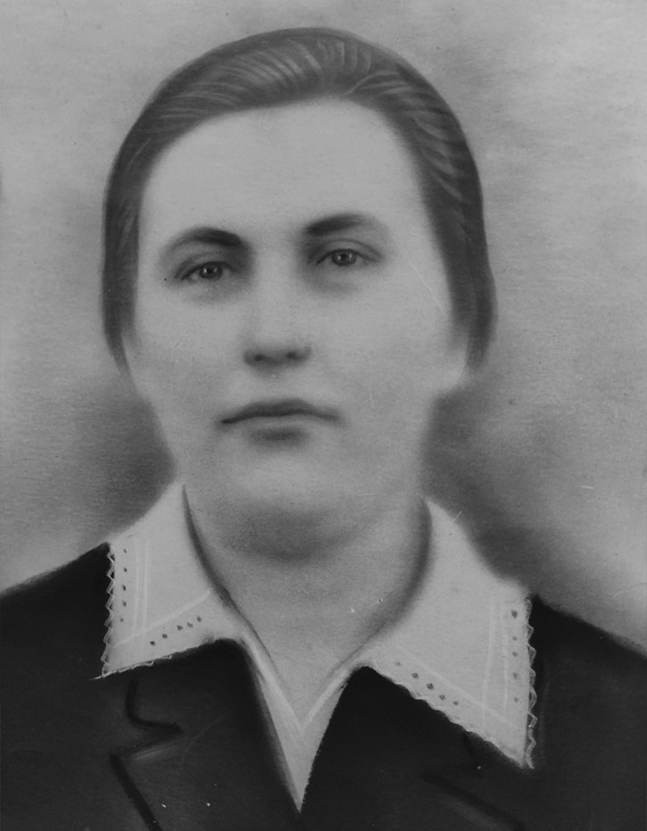

Макась Мария
Биография
Макась Мария вместе со своим сыном Макась Александром во время немецкой аккупации беларуси 1941-1944 года учавствовали в портизанской борьбе против немецких захватчиков и состояли в рядах Ивенецкого подполья воложенского района их выдали немцам и они были растреляны.